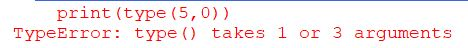

Programmeerimine algab probleemist ja sellest, et soovitada saada lahendus probleemile. Selleks, et lahendad probleemi tuleks lahendus panna kirja samm-sammult ehk luua algoritm. Milline on esimene samm ja mis sellele järgneb, kuidas jõutakse lahenduseni. Näiteks võib võtta pannkoogi küpsetamise retsepti. Probleemiks on eluline puudujääk pannkookidest ja lahenduseks on taldriku täis maitsvaid pannkooke.
Programm
Algoritme saab kirja panna erinevalt tihti kasutatakse selleks plokkskeeme.
Plokkskeemidest, aga arvuti aru ei saa. Seega tuleks probleemilahendus kirja panna programmina.
Programmide kirjutamiseks on olemas erinevad keeled, näiteks HTML, C++, Java või Python.
Sellel veebilehel me õpetame kuidas kirjutada lihtsaid programme Pythonis.
Esimene programm
print("Tere!")
See on väga lihtne üherealine programm.
See toob ekraanile:
Tere!
Andmetüübid
Python saab aru 4 erinevast andmetüübist
- Täisarvud (int). Näiteks
1; 42; 10200222 - Ujukomagaarvud (float). Näiteks
1.4; 54.123(komana kasutatakse punkti) - Sõne ehk tekst (str). Näiteks
"Tere"; "Nööp" - Tõeväärtus (bool).
True False
Selleks, et teada saada,mis tüüpi väärtustega meil tegu on, tuelb kasutada käsku type(Väärtus mille
tüüpi soovite teada)
Katseta ise:
Nagu näha võis, siis viimane andis errori
See näitab, et koma kasutatakse Pythonis kahe elemendi eraldamiseks, mitte ujukomaga arvu esitamiseks. Ja jutumärgid ümber arvu, muudavad arvu sõneks.
Muutuja
Pythonis on muutuja põhimõtteliselt nagu nimi või aadress, mille abil saadakse õige info kätte. Muutujal on
erinevad eeskirjad, kuidas seda luua.
Näiteks ei tohi muutuja alata numbriga ega sisaldada tühikuid
(nende asemel võib kasutada alakriipsu „_“ nt minu_muutuja). Muutuja ei tohi olla ka mingi Pythoni
funktsioon nt print, and, ifjne.
Sisend kasutajalt
Programm saab andmeid küsida ka kasutajalt. Selleks saab kasutada käsku
Kui küsite kasutajalt numbrit siis
int(input("Kirjuta üks number: “))
Tingimuslause
Tingimuslauses on kesksel kohal tingimus, mille alusel otsustatakse, kuidas programm edasi töötab.
Tingimus on esitatud tõeväärtuse tüüpi avaldisena, mille väärtus on tõene (True) või väär (False)
- tingimus on täidetud või ei ole täidetud.
Tingimusi saab (muuhulgas) moodustada järgmiste märkidega:
<,>, <=,=>võrratuste kehtivuse kontollimiseks==võrduse kontrollimiseks!=mitte võrduse kontrollimiseks
Kokkuvõte
See on esimene ülevaade erinevatest andmetüüpidest ja tehetest, mida saab Pythonis teha. Python on väga võimekas ja suhteliselt kerge keel, mille õppimine on kõigile kasulik. See siinne leht on vaid väike ülevaade mõnedest asjadest, mida on võimalik Pythoniga teha.